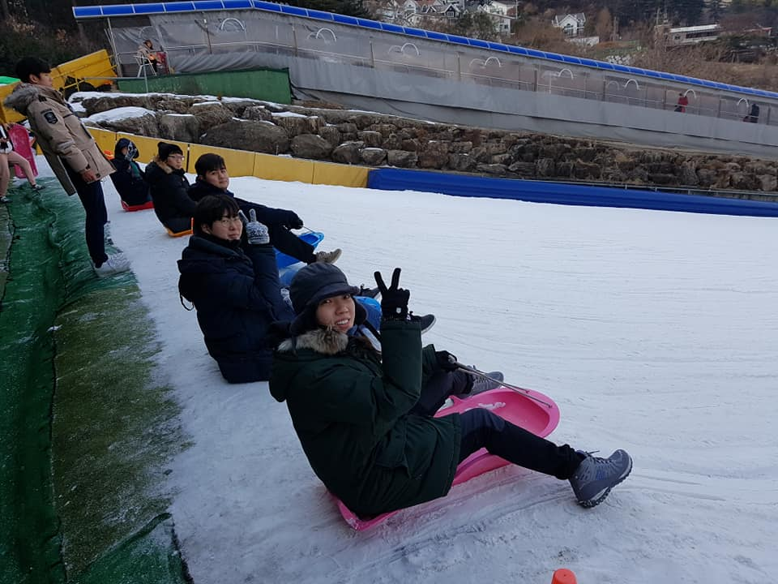
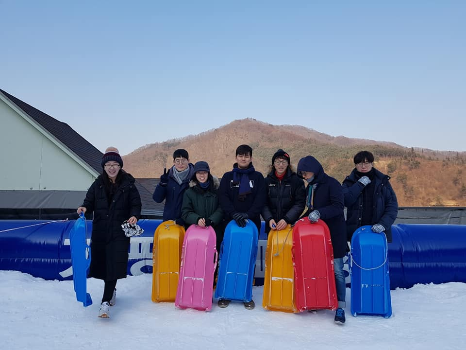

1. 워크샵
YAM의 MT와도 같은 워크샵은 평균적으로 매년 한번씩 열리며, 자유롭고 즐거운 분위기 속에서 타교학생들과 만나며 친목을 쌓고, 본인의 연구 포스터를 발표하며 학술적으로 교류할 수 있는 시간입니다. 또한 외부연사님의 초청강연이 열리고, 대학원생활 팁 공유 및 연구윤리에 대한 토론이 이루어지는 등 알차고 다양한 활동들이 준비되어 있습니다.




2. 정기총회
정기총회는 보통 봄/가을 한국천문학회의 분과회의 시간에 이루어집니다. 신입회원 환영, 분기별 활동보고, 차기 임원진 선출 등이 이루어집니다.

3. 얌! 얌! 얼굴 좀 보자
얌! 얌! 얼굴 좀 보자는 학생들의 교류와 친목도모를 위한 번개모임입니다. 봄/가을 천문학회와 얌 워크샵 외에 회원들 간에 마주할 기회가 적다고 생각하여 더 어울릴 수 있는 자리를 마련하고자 하는 취지에서 생겨났습니다.

4. 얌마당
2021 얌 운영진은 코로나로 인해 어려워진 젊은 천문학자들간의 학술 교류를 활성화하기 위해, ‘얌마당’이라는 젊은 천문학자 중심의 콜로퀴움을 매달 두 번째 또는 세 번째 주 금요일에 진행했습니다.
‘얌마당’의 장점:
- 연구 홍보 및 발표 연습 기회 제공
- 기초적인 질문도 자유롭게 던질 수 있는 편안한 분위기
- 본인의 연구분야 외의 천문학 주제들에 대한 이해도 향상
2021년 5월을 시작으로 2022년 2월까지 총 9번의 얌마당이 진행되었습니다.
1
2021. 05. 14
김유정 (서울대) — 샛별상 수상자 강연
"Using stellar distance indicators for cosmology"
2
2021. 06. 18
김동현 (연세대)
"Star-Gas Misalignment in Galaxies (부제: 비뚤어진 은하들 이야기)"
3
2021. 07. 16
최우락 (연세대)
"외부은하의 성간물질 다양한 도구로 자세히 들여다보기"
4
2021. 08. 20
이가인 (서울대)
"가벼운 별 근처 원시행성계원반의 중력불안정"
5
2021. 09. 17
하지훈 (UNIST)
"은하단 환경 플라즈마: 입자 가속과 복사 (Intracluster Medium Plasmas: Particle Acceleration and Radiation)"
6
2021. 11. 19
문재연 (ANU) — 샛별상 수상자 강연
"The Effects of Ram Pressure Stripping on the Star Formation Activity of Galaxies in the Virgo Cluster"
7
2021. 12. 17
서정빈 (부산대)
"초고에너지 우주선과 전파은하의 제트에서의 입자 가속"
8
2022. 01. 28
김진협 (옥스퍼드) — 천문학자의 진로 특강 (1)
"약중력렌즈 현상을 이용한 고적색편이 은하단의 질량결정과 현대 표준 우주론의 검증"
9
2022. 02. 25
이광호 (삼성전자) — 천문학자의 진로 특강 (2)
"Scaling Down From Mpc to Angstrom (부제: 천문학자 반도체 회사에서 살아가기)"